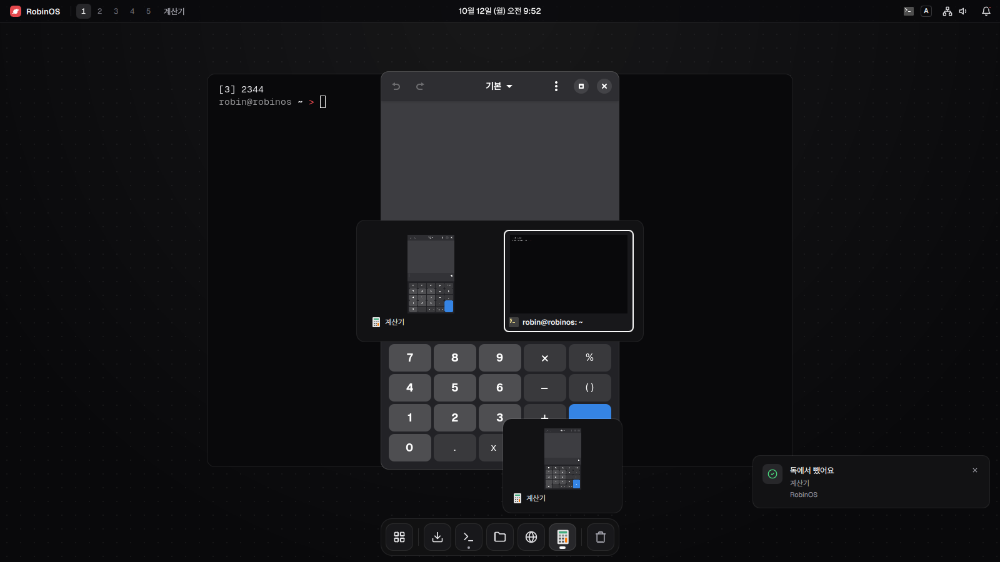
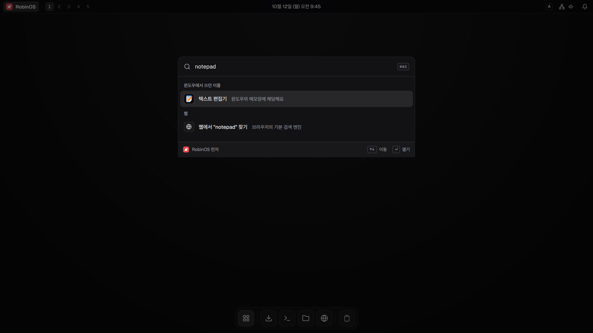
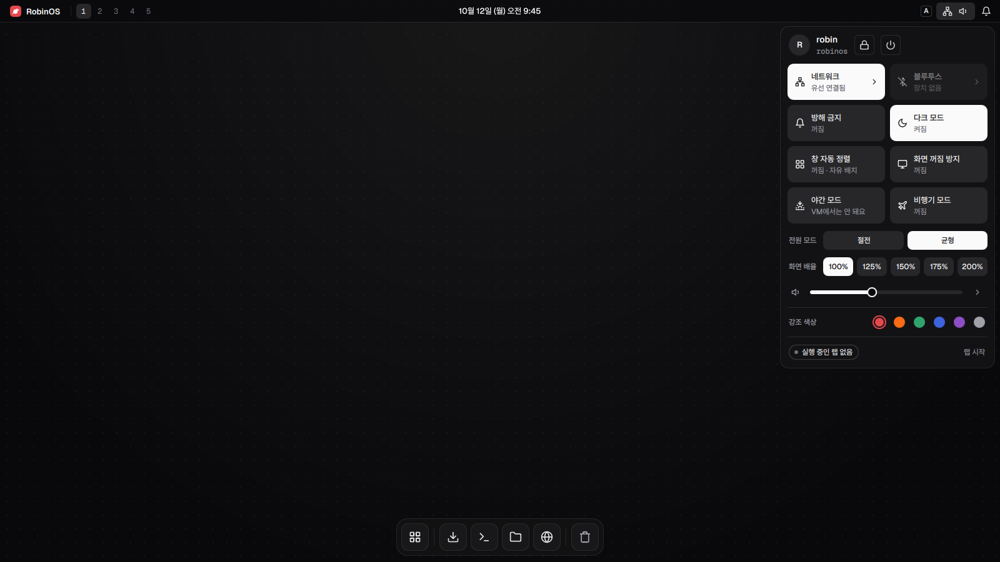
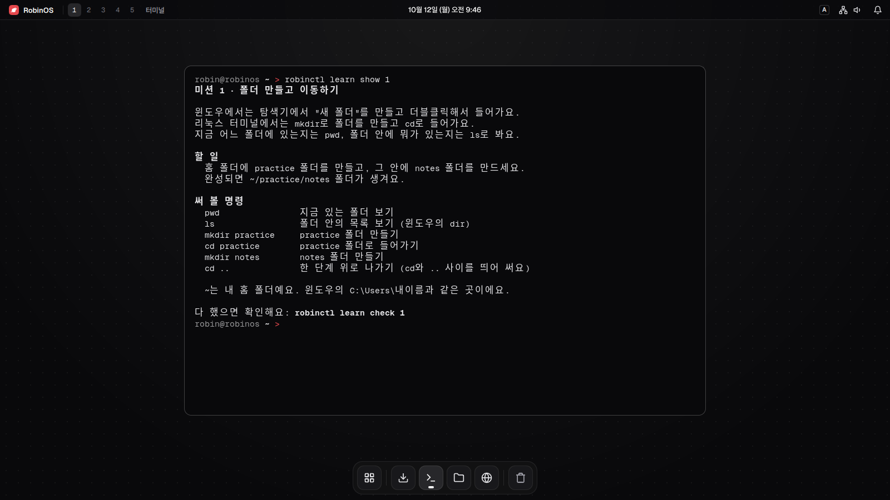
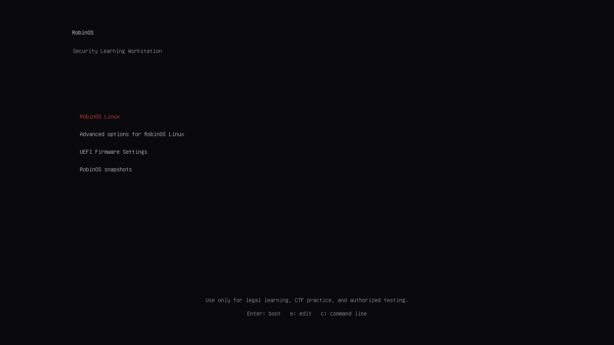
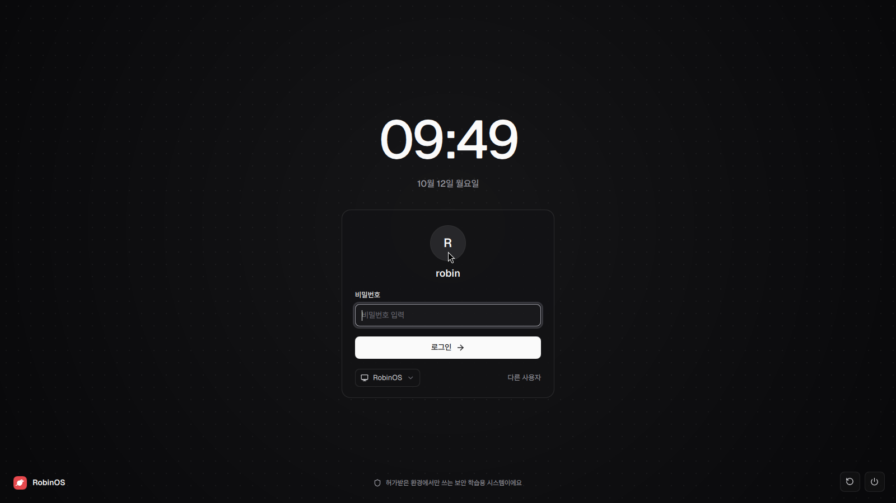
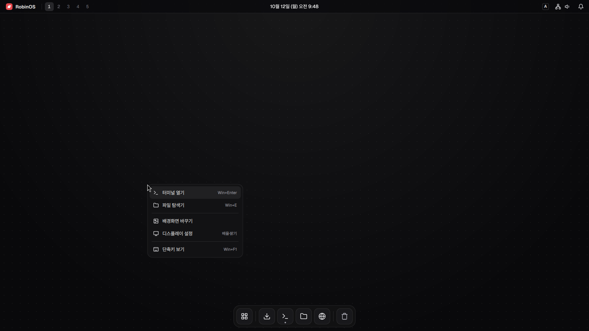
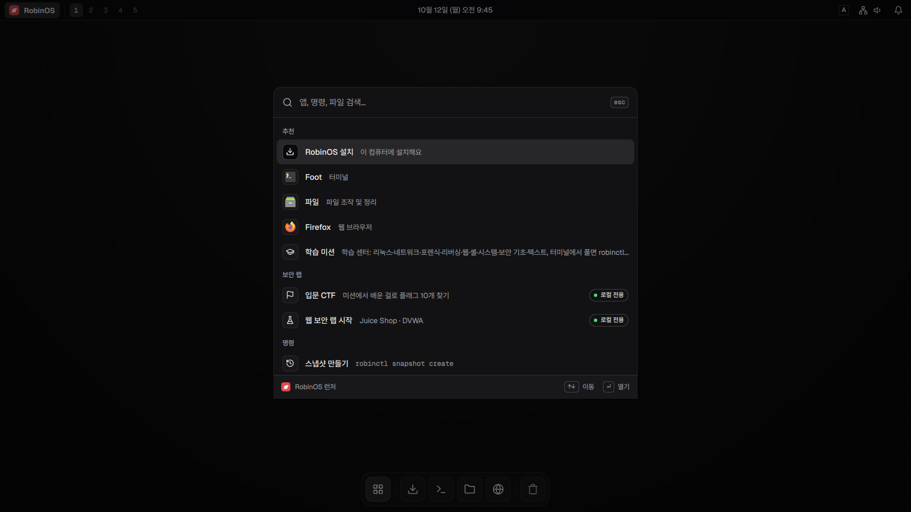
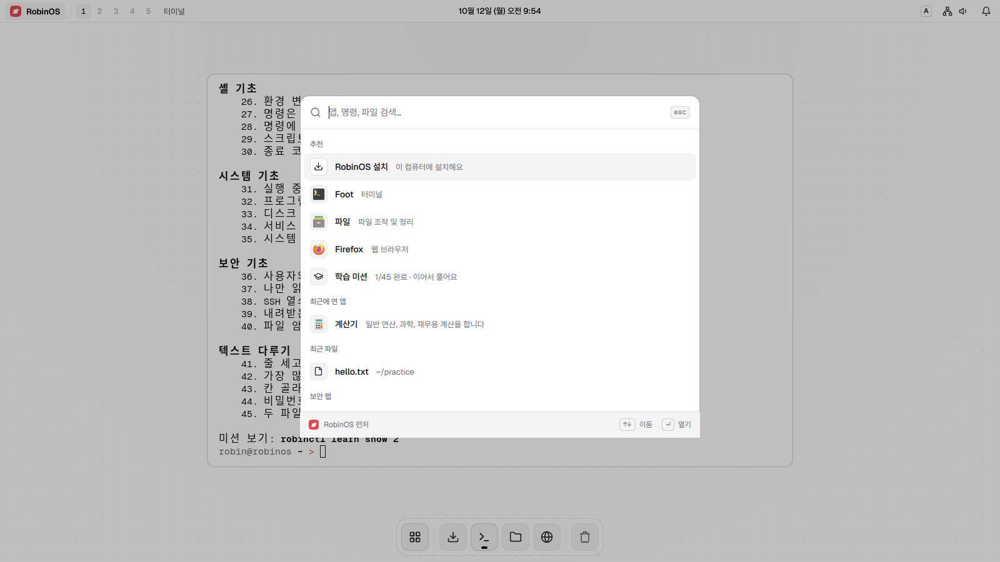
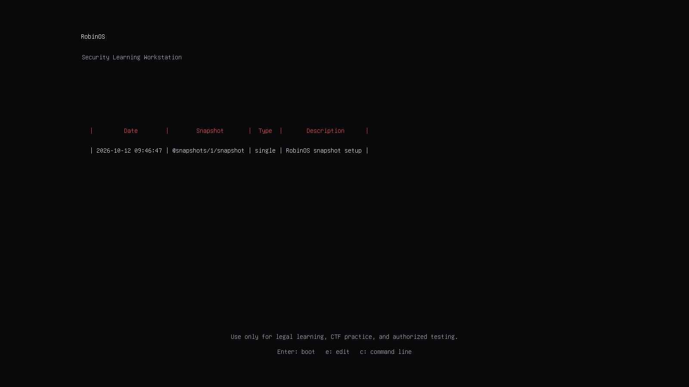

직접 만든 화면으로 매일 쓰는 리눅스
> 단축키

> Win+Space 런처
notepad를 찾으면 텍스트 편집기가 나와요

> Win+S 빠른 설정

> 터미널
> robinctl learn

> 부팅 메뉴 · 로그인 · 바탕 화면
부팅 메뉴부터 로그인, 바탕 화면까지 직접 그렸어요

부팅 메뉴

로그인

바탕 화면
> 다크 · 라이트


> Btrfs 스냅샷
업데이트 전후로 스냅샷이 남고, 부팅 메뉴에서 골라요
